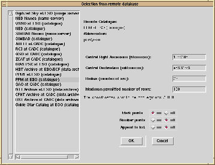

|  | The Cursa remote catalogue accessing has been incorporated into Isys and is invoked via the Sources item of the main menu. When first invoked it requests a list of available catalogues from the remote server and then presents these in a list box on the left of the dialogue. A single click selects the catalogue to search. The central position (by default the current position) and the search radius are set in the entry boxes. Three check boxes then control what happens to the results of the search. Returned positions can be marked on the image and optionally numbered; they can also be appended to the current list (or become the current list if there isn't one). |